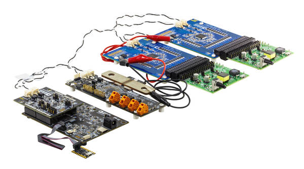
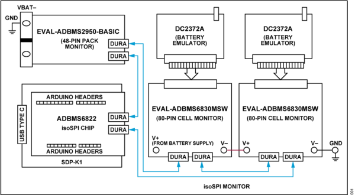
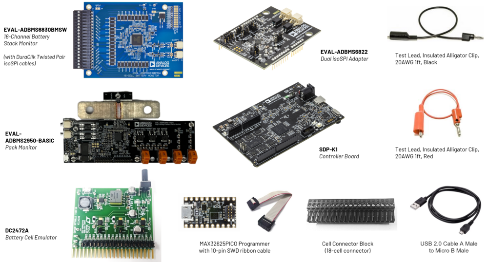

AD-CELLPACKBM-SL User Guide#
Overview#
Download
The AD-CELLPACKBM-SL is a complete BMS kit consisting of the EVAL-ADBMS6830BMSW 16-channel cell monitoring module, the EVAL-ADBMS2950-BASIC pack monitoring module, EVAL-ADBMS6822 isoSPI adapter, and the SDP-K1 microcontroller board.
This solution is based on high-performance BMS devices that are specifically designed for broad market applications and is suitable for determining the battery’s state of charge (SoC) and state of health (SoH), as well as performing important BMS diagnostics.
The AD-CELLPACKBM-SL can operate either in embedded mode or through a PC-based graphical user interface. Complete with working software and hardware, as well as software examples, this kit makes it easier for customers to prototype and create connected systems and solutions for BMS applications.
{kind=link}
Features#
Accurate voltage and current measurement
Highly scalable and ease of integration
Robust isoSPI capability implementable in daisy chain high count
Inclusive passive balancing with individual pulse-width modulation
Isolated power supply between microcontroller and battery monitoring ICs
Applications#
IoT Battery Management
Industrial Machine Vision
Power Tools
Mobile Robotics Battery Management
Industrial Equipment Battery Monitoring
Adaptive Battery Type System Monitoring
Portable Energy Storage Systems
Electric Two-Wheelers (E2W such as E-scooter, E-bikes)
Light Electric Vehicles
System Architecture#
{kind=link}
Specifications#
Below are the absolute maximum ratings of voltages relative to GND unless noted otherwise.
Parameter |
Minimum |
Typical |
Maximum |
Unit |
|---|---|---|---|---|
System Vin+ Supply Voltage |
6 |
12 |
60 |
V |
Cell Monitoring Main Supply Voltage |
11 |
85 |
V |
|
VREG Supply Voltage |
4.5 |
5 |
5.5 |
V |
VREF1 1st Reference |
3.0 |
3.2 |
3.3 |
V |
Voltage No Load |
||||
VREF2 2nd Reference |
2.995 |
3 |
24 |
V |
Voltage, 5k Load to V- |
||||
CPIN Input Range |
-2.5 |
5.5 |
V |
|
Cell Count |
16 |
|||
Pack Monitoring Main Supply Voltage In |
21 |
V |
||
Pack Monitoring Main Supply Voltage Out |
1000 |
V |
||
VREG Pack Monitor |
4.5 |
5 |
5.5 |
V |
Current Input S1A, I1A, I1B |
-4 |
4 |
V |
|
Current Input S2A, I2A, I2B |
-4 |
4 |
V |
|
Current Input I3A, I3B |
-4 |
4 |
V |
|
MCU Supply Voltage |
3.3 |
5.5 |
V |
|
MCU Standalone Supply Range |
5 |
5.5 |
V |
|
MCU via USB Supply range |
3.3 |
5.5 |
V |
|
Cx Voltage |
-0.3 |
85 |
V |
What’s Inside the Box?#
Upon purchase of the AD-CELLPACKBM-SL kit, the package comes with the following boards and accessories
{kind=link}
Key Components#
EVAL-ADBMS6830BMSW 16-Channel Battery Cell Monitor
The EVAL-ADBMS6830BMSW is a full-featured evaluation board for the ADBMS6830B, a 16-channel battery stack monitor for broad market applications. This board allows multiple boards to be linked through a single twisted pair wire interface (isoSPI) to monitor a long series of cells in a stack. It provides access to full channel monitoring to all cells going to battery pack either in the supply line or in the V+ to V- line. The evaluation board also features reversible isoSPI that can access either path to do measurement functions and serve as a redundant communication path.
Click here to see the EVAL-ADBMS6830BMSW User Guide
EVAL-ADBMS2950-BASIC Battery Pack Monitor
The EVAL-ADBMS2950-BASIC battery pack monitoring evaluation board features the ADBMS2950B, a bidirectional current monitor, with 12 buffered high impedance voltage sense inputs, linked through a 2-wire isolated serial interface (isoSPI). This board also features reversible isoSPI, enabling a redundant communication path.
The EVAL-ADBMS2950-BASIC board can be operated on the same isoSPI daisy-chain with other ADBMS2950B and ADBMS6830B devices.
Click here to see the EVAL-ADBMS2950-BASIC User Guide
EVAL-ADBMS6822 Dual isoSPI Adapter
The EVAL-ADBMS6822 is a dual SPI to 2-wire isolated serial port interface (isoSPI) adapter featuring the ADBMS6822. This board allows multiple ADBMS68xx battery monitors through daisy-chain connections. The EVAL-ADBMS6822 evaluation board also features reversible isoSPI, which enables a redundant path to the peripheral units. The PCB components and DuraClik connectors are optimized for low electromagnetic interference (EMI) susceptibility and emissions.
Click here to see the EVAL-ADBMS6822 User Guide
EVAL-SDP-CK1Z (SDP-K1) Controller Board
The EVAL-SDP-CK1Z Controller Board provides a means of communicating with the PC from the other BMS boards in the Cellpack BMS System. The SDP-K1 provides USB connectivity through a USB 2.0 high speed connection to the computer, allowing users to evaluate components on this platform from a PC application. The SDP-K1 is based on an STM32F469NIH6 Arm® Cortex®-M4 microcontroller with the peripheral communication lines available to the daughter board(s) through a 120-pin small footprint connector and Arduino® Uno-compatible headers.
Resources#
Design & Integration Files#
Download
AD-CELLPACKBM-SL Design Support Package
Schematic
PCB Layout
Bill of Materials
Allegro Project
Help and Support#
For questions and more information, please visit the Analog Devices Engineer Zone.
EngineerZone Support Community